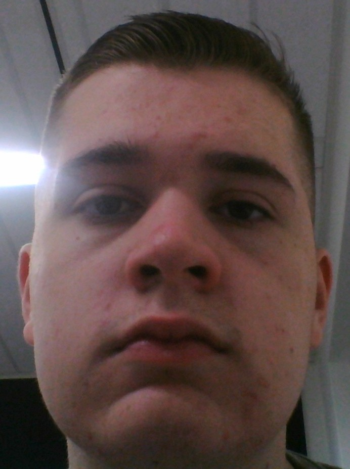
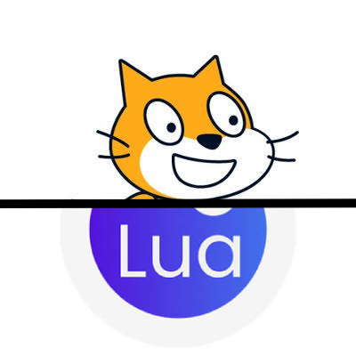
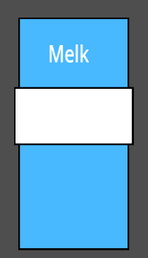
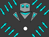

Wie ben ik?
Hallo mijn naam is Rafael Gouweleeuw, en ik ben 17 jaar oud.
Ik woon nu in Maashaven, Rotterdam sinds 2026, en kom met metro naar school toe.
Ik zit nu op Techniek college Rotterdam,
omdat ik daar graag programmertalen wil leren.
Mijn hobby's zijn gamen en soms basketballen en soms ga ik ook naar sportschool toe.


Projecten
Ik heb vooral aan projecten in scratch gewerkt,
maar ook een kleine beetje Lua geleerd in roblox studio.
Veel spelen ben ik halverwegen mee gestopt en degene die online staan, zijn nou ook niet echt van hoge kwaliteit

Project: Melk Clicker
Dit spel had ik gemaakt voor een opdracht in de brugklas voor informatietechnologie.
Het spel is vooral geinspireerd door cookie clicker maar wel heel slecht gemaakt,
want je kan het spel in ongeveer 10 minuten uitspelen.
In het spel click je vooral melk om melk als geld te verdienen,
en daarna upgrades te kopen om meer melk te krijgen.

Project: Boss spell
Dit spel had ik gemaakt tijdens informatietechnologie,
ik werkte aan dit spel wanneer ik niks te doen had tijdens de les.
Dit spel is veel beter dan Melk clicker,
maar nog steeds best slecht in kwaliteit.
Het spel is vooral geinspireerd door undertale en andere bullet hell games.